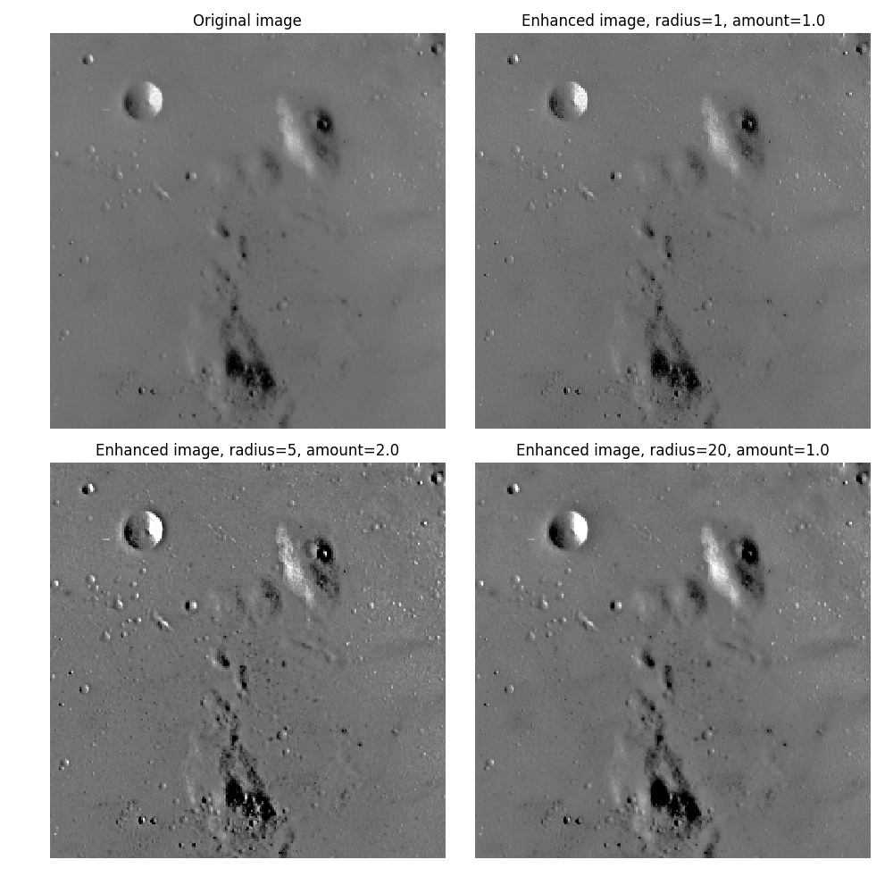

Note
Click here to download the full example code
Unsharp masking is a linear image processing technique which sharpens the image. The sharp details are identified as a difference between the original image and its blurred version. These details are then scaled, and added back to the original image:
enhanced image = original + amount * (original - blurred)
The blurring step could use any image filter method, e.g. median filter, but traditionally a gaussian filter is used. The radius parameter in the unsharp masking filter refers to the sigma parameter of the gaussian filter.
This example shows the effect of different radius and amount parameters.
from skimage import data
from skimage.filters import unsharp_mask
import matplotlib.pyplot as plt
image = data.moon()
result_1 = unsharp_mask(image, radius=1, amount=1)
result_2 = unsharp_mask(image, radius=5, amount=2)
result_3 = unsharp_mask(image, radius=20, amount=1)
fig, axes = plt.subplots(nrows=2, ncols=2,
sharex=True, sharey=True, figsize=(10, 10))
ax = axes.ravel()
ax[0].imshow(image, cmap=plt.cm.gray)
ax[0].set_title('Original image')
ax[1].imshow(result_1, cmap=plt.cm.gray)
ax[1].set_title('Enhanced image, radius=1, amount=1.0')
ax[2].imshow(result_2, cmap=plt.cm.gray)
ax[2].set_title('Enhanced image, radius=5, amount=2.0')
ax[3].imshow(result_3, cmap=plt.cm.gray)
ax[3].set_title('Enhanced image, radius=20, amount=1.0')
for a in ax:
a.axis('off')
fig.tight_layout()
plt.show()
Total running time of the script: ( 0 minutes 0.170 seconds)
 Source
Source